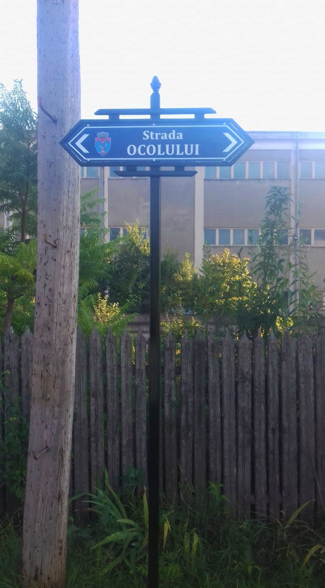
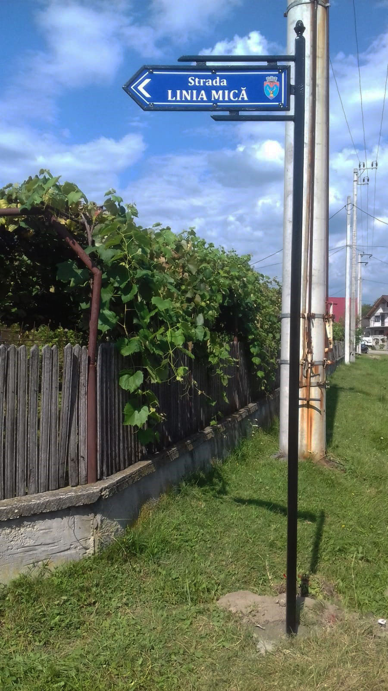
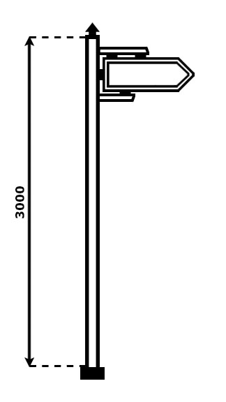

Home
Indicatoare
Despre noi
Comandă
Indicatoarele sunt color, cu cadru negru (culoare opțională)
 
Înălțimea este 3m, iar lățimea este 72cm. Din nou, modelele sunt opționale și se pot confecționa indicatoare cu diferite dimensiuni.

(C) Dumitrescu IR Constantin II 2019